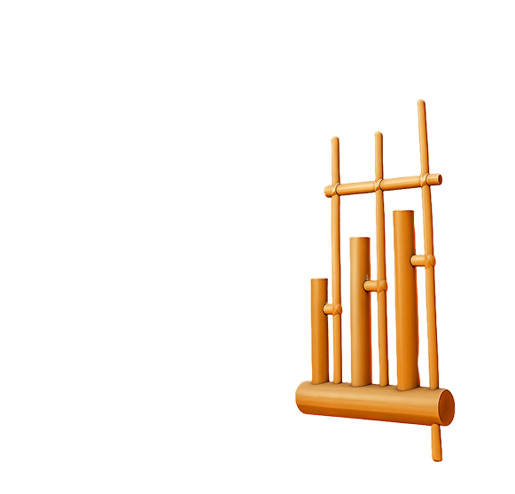
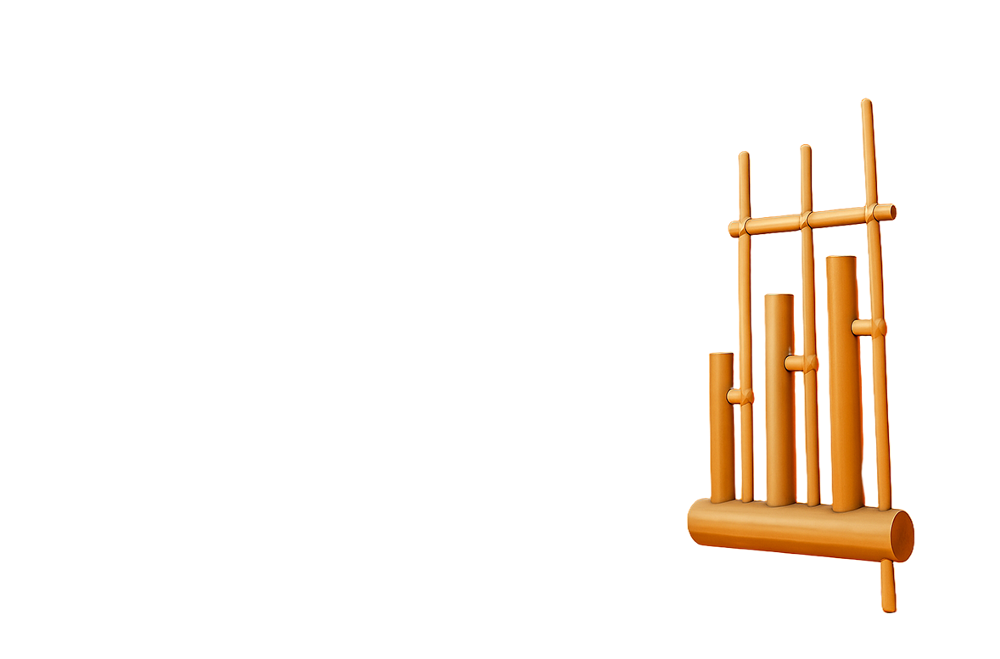

Angklung Jono —Suara Alam dari Tanah Sunda
Nikmati produk dan cerita seputar angklung karya Pak Jono. Kami menyediakan ruang bagi kamu untuk menjelajahi produk, memahami makna budaya, dan mendukung pelestarian tradisi lewat pembelian langsung dari pengrajin lokal Jawa Barat.
